WinBoard for Novices
WinBoard is an enormously versatile user interface for Chess in all its forms,
and a first-time user might be overwhelmed by the number of options one can set to control its features.
This tutorial is intended to introduce you to the most important features in a pedestrian, hands-on way.
Note that WinBoard is only an interface; it does not play Chess (i.e. think up moves) itself.
For that, you need a so-called engine, which is an independent program.
WinBoard is just a front-end to communicate with such an engine in a user-friendly way:
it shows you the moves that the engine plays on a Chess board,
and allows you to enter your own moves by dragging the pieces to their destination square,
sending the move to the engine.
PLAYING AGAINST THE COMPUTER
The easiest way to use WinBoard is to start it for a specific task, such as playing against an engine of your choice.
The Windows start menu contains a menu group for your WinBoard install, with a sub-group 'Chess Engines'.
In the latter you will find menu items for playing against a number of pre-installed engines.
When you select one, this will bring up WinBoard, with the selected engine loaded.
You can now immediately start playing a game, by making a move for white.
The engine is initially set to play black, and will reply with its move, after some thought.
To enter a castling move, just drag the King to its destination two squares away.
WinBoard will understand that you intend to move the Rook with it, and will automatically do so.
Similarly, when capturing en-passant, just draw the Pawn to the empty square, and WinBoard will automatically remove the captured Pawn.
Note that you can also move by first (left)clicking the piece you want to move,
and then the square you want to move it to,
but drag-and-drop moving is usually easier.
|
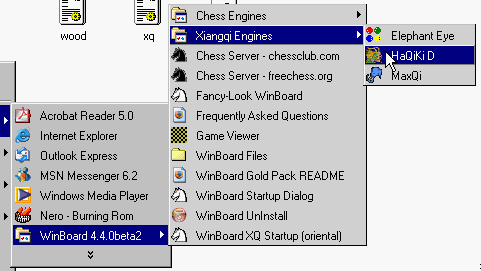
|
|
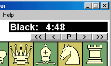
Clock and step buttons
|
Notice how the Chess clocks above the board count down the time while you or the engine is thinking.
In the line above the board, you will see what the engine is thinking about,
the so called Principal Variation (PV),
and when it is done thinking, its move will be printed there in text form.
Of course this move will also be performed on the board, indicated by a big arrow to attract your attention.
When you first installed WinBoard, it was set to play 40 moves / 5 min,
which might be a bit faster than you would like.
When the clock reaches zero before you finished the 40th move,
you lose on time.
Otherwise, you get 5 extra minutes on your clock for the next 40 moves, etc.
|
SETTING THE CLOCKS
So first let us try to set the game for a somewhat slower pace.
To this end you have to first start a new game, as you cannot change the 'time control' in the middle of a game.
This can be done by opening the 'File' menu, (on the menu bar above the clocks),
and clicking 'New Game'.
This aborts any game you might have been playing, and sets up the pieces for a new one.
Then open the 'Options' menu, and select the 'Time Control...' item near the top.
This opens a dialog where you can alter the pace of the game.
First you have to choose the type of time control:
Classical, which is N moves per M minutes recurring (i.e. you get M minutes added to your clock every N moves),
incremental, which is M minutes for the entire game (sudden death),
possibly with a certain number of seconds added for each move you do.
Finally there is 'Fixed time per move', where you must move within the specified number of minutes,
and any leftover time will not be carried to the next move.
Just tick one of these options, and type the number of minutes you would like to get in the associated time input box.
(Note you can type things like 0:10 to get 10 sec.)
Less obvious is the meaning of the 'Time-odds factors'.
When you open the dialog, WinBoard will always propose to set them to 1.
You will only need to alter that value if you want to play a time-odds game, where one side is allowed more thinking time than the other.
If you put 10 in one of those boxes, it means the correspondng side will get its time reduced by a factor 10,
compared to what you specified above.
This is a good way to dumb down the engine a little, so it doesn't slaughter us.
If we play against an engine, the latter is always the 'first engine', (and the field called 'second engine' is used for us!),
so be sure to put the 10 there.
When you are done, just click 'OK'.
The clocks should now be set to the time you selected, where the black clock got the time-odds reduction, if you specified any.
This is because the engine is initially set to play black.
|
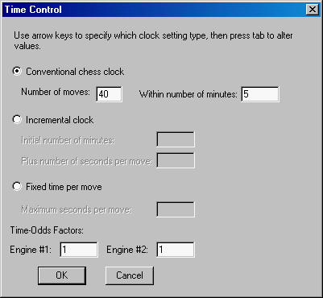
Options -> Time Control... dialog
|
 Part of the Mode menu
Part of the Mode menu
|
When you decide you'd rather play black yourself, open the 'Mode' menu, and click 'Machine White'.
As white is on move in the start position, this will immediately set the engine thinking, in the usual way.
When you specified time-odds for the engine, it is now the white clock that will have the reduced time.
At any time it is possible to look back through the game by using the Left and Right Arrow keys of the keyboard,
which do the same as the < and > buttons just above the board.
Doing this does not affect the game, you cannot use it to take back moves you regret.
Just to recall them, and regret some more!
With << and >> you can go directly to the first or (current) last move of the game.
Taking back moves can be done through the 'Retract Move' item in the 'Engine' menu.
(The Edit menu, btw, contains a third way to step through the game for viewing, in the form of the 'Forward' and 'Backward' items.
The mouse wheel provides a fourth method to do this!)
Note when you take back your move, you also get the time back you wasted on thinking about it.
WinBoard is really very friendly!
|
SOME GENERAL OPTIONS
|
Now there are some things you might not like.
For instance, seeing what the computer thinks about is a bit distracting, and above all, it is cheating!
If this is beneath you, you can go to the 'Options' menu, and click 'General...'.
You then get a dialog window where you can switch on or off a number of quite relevant features.
One of those is 'Hide Thinking from Human'. Tick it, and you will no longer see above the board what the engine is thinking about.
Another relevant option is 'Highlight Moves with Arrow'.
If you think that arrow indicating the last move is ugly or distracting, just untick this option, and it will no longer bother you.
Unticking 'Auto-Flag' will suppress automatic claiming of a time loss when you or the engine exceed time.
You can still claim by clicking on the clock that ran out, in that case.
If you are a novice player that could use some help,
'Highlight Dragging' can make WinBoard show where you can move the piece you pick up.
(Even if this is beneath you in normal Chess, wait until you try a game of Chinese Chess before you judge this feature!)
There are many more options here, but they can wait till later.
When we switched off the highlighting of moves with the arrow,
they will still be highlighted with colored rims around the squares.
Staring at the board until you see something move is very taxing, though, especially at slow TC,
and especially when there is no arrow to atract your attention.
So we would like WinBoard to warn you with a sound when the opponent moves.
To accomplish this, open the 'Options' menu and select 'Sounds...'.
This will open a dialog where you can select an event with which you want to associate a sound.
Most events are things that only occur when you play over the internet,
but 'Move' occurs in any game, and is what we are looking for.
So make sure this is what the 'Event' combobox displays, and then tick 'built-in sound'.
In the combobox you can then select a sound, e.g. 'Ching'.
By clicking the 'Play' button you can hear how it sounds, a civilized, modest warning chime.
If you plan to stray far from your computer, you might prefer 'Gong',
and when you want to scare the hell out of anyone present, use 'Penalty'.
After you selected, click 'OK', and that sound will now warn you on every move.
|
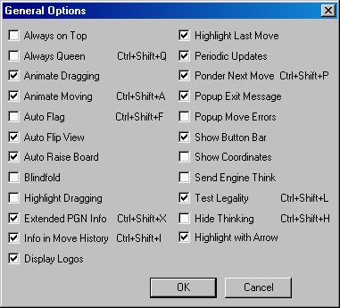
Options -> General...dialog
|
|
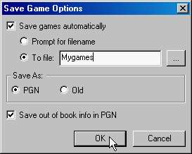
Options -> Save Game... dialog
|
After you have finished a game, you can still step through the game with the arrow keys, for viewing.
The game will stay stored in WinBoard until you start a new one.
You can save the game on a file through the 'Save Game...' item in the 'File' menu.
You can also make this happen automatically.
To accomplish this, go to the 'Save Game...' dialog in the 'Options' menu.
There you can tick 'Save Games Automatically',
and then you can choose to either be prompted for a filename on every save,
(a bit inconvenient, but allowing you to choose a different file name for every game),
or to save everything on the same file, the name of which you give now.
Note that WinBoard will always append the game to the file on saving, so you would never lose any data by overwriting.
So for now, just choose that option, using (say) the file MyGames.pgn for saving.
For the format, always use PGN. The 'old' format is truly obsolete by now.
Confirm the dialog with 'OK' to have the new settings take effect.
When you use the 'Save Game...' item in the 'File' menu to save a game,
WinBoard will suggest a name of the form 'White_Player-Black_Player.pgn', which you can directly 'OK'.
The player names used will be the same as displayed in the title bar of the board window during the game.
This will be the engine name (told to WinBoard by the engine, or derived from the name of the engine file) if an engine was playing,
or the username under which you are logged on to your Windows system.
When you are not happy with the latter, you can use the 'Enter Username...' item in the 'Mode' menu to change it.
Note that WinBoard also uses these names to display logos above the board,
when this feature is switched on (in the General Options dialog).
Next to the clock of a playing engine it would display any bitmap file of the name logo.bmp it found in the engine folder.
For the Human opponent it would use a bitmap file from the sub-folder "logos" in the WinBoard folder with the user's name,
i.e. if your system logon was "Jimmy", it would look for a file "logos\Jimmy.bmp", and display it next to your clock.
|
SETTING UP A POSITION
|
 The Mode menu
The Mode menu
|
From the 'Edit' (or 'Mode') menu, select 'Edit Position'.
Nothing conspicuous will happen, but if you now right-click a square on the Chess board,
a menu will pop up where you can select a piece.
That piece would then be put on the square you clicked.
But there are also menu entries for clearing the board, or changing the side to move, which would not put anything in the square.
Let's start by using 'clear board', after clicking anywhere,
and then put a white King and Pawn on e1 and e2, respectively, and a black King on e8,
by right-clicking those squares and selecting the corresponding piece.
(Note there are some un-orthodox pieces on the menu as well, intended for other variants;
stay away from those in normal Chess, most engines would not like them!)
There is no explicit command to leave this 'Edit Position' mode;
you just click what you want to do next after you are done.
When we set up the KPK position, let us click 'Two Machines' in the 'Mode' menu.
You will then see the computer play this end-game against itself.
(Uness the TC is very fast, white should not have much trouble winning this.)
Actually this is two engines playing against each other,
the 'first engine' with white, the 'second engine' with black.
But the same engine could be used for both.
|
|
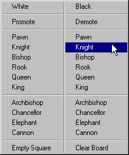
Piece Menu in Edit-Position mode
|
|
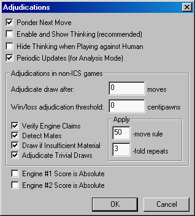
The Adjudications dialog
|
After the game is done, you can use << to get back to the starting position you entered.
Let us modify it a little, by again clicking 'Edit Position'.
Draw the black King from e8 to e6.
You can move pieces around just like in a normal game when editing a position!
In fact you can move them to anywhere, the moves do not have to be legal,
and you can move both white and black pieces.
In fact you can even move empty squares!
Drawing an empty square on top of the white Pawn makes the latter disappear.
(Oops, we did not want that! There is no 'undo' here, so right-click e2 to put back the Pawn again.)
You could also draw pieces off the board to get rid of them.
Finally let us give the turn to black in this position.
You could do this by right-clicking (anywhere on the board) and selecting 'black',
but easier is to just click the black clock above the board (in Edit-Position mode!).
In edit-position mode you can also type a FEN to set up the position.
When you start typing when the Chess-board window has focus,
a type-in dialog will automatically pop up to accept your input.
Select 'Two Machines' again from the 'Mode' menu, to see the engines play out the new position.
This should end in a draw, because of 3-fold repetition of 50-move rule.
WinBoard will point this out even if the engines do not.
This might be a bit against FIDE rules, because according to these claiming a draw is optional.
But you would not want stubborn engines to play on until your computer has turned to dust.
Anyway, you can control such decisions by WinBoard through the 'Adjudications...' dialog in the 'Options' menu.
There you can tick if you want WinBoard to automatically declare draw if checkmate is no longer theoretically possible
(insufficient material),
or even when it is still possible, but only with a great deal of help from the losing side
such as in KBKN or KRKR (trivial draws).
You can also set the number of repeats or irreversible moves after which WinBoard would terminate a game,
even if none of the players claimed draw.
Setting the latter to 0 would disable this kind of adjudication completely.
Most engines would claim draw by themselves anyway,
so this is more a feature for testing flakey engines.
The 'Verify Engine Claims' option makes WinBoard check if the engines do not cheat with such claims;
unticking it would make WinBoard believe any claim by the engine.
(The latter setting would be useful for some variants,
where the engine knows the rules better than WinBoard.)
|
PERSISTENT SETTINGS
When you close WinBoard (usually simply by clicking the cross in the 'system menu' in upper right corner of the window,
but there is a 'Quit' item in the 'File' menu to do the same),
all the changes you made to the settings so far (the save game file, the time control)
will be saved on a settings file (know as the 'ini file'),
and will be automatically applied next time you start WinBoard.
In other words, the settings are persistent.
Try it out by closing WinBoard, and restarting it from the Windows start menu.
Even the Chess board should pop up in the same screen location as when you closed it.
This behavior is controlled in the 'Options' menu, by the item 'Save Settings on Exit' (which should be checked).
When you really messed up the settings during a session, and regret it, you can uncheck this menu item before closing WinBoard,
to preserve the old settings.
The next time you start, 'Save Settings on Exit' will still be on,
because the settings where you had switched it off were not saved automatically!
You can change the persistent value of 'Save Settings on Exit' to off, though,
by first switching the automatic saving off, and then use the item 'Save Settings Now' in the 'Options' menu.
AUXILIARY WINDOWS
Unlike when playing against an engine yourself, where looking too much at what the engine is thinking is like cheating,
when playing two engines against each other, we usually want to see as much as possible about the engine 'thoughts'.
We have already seen how to switch 'Hide Thinking from Human' on and off,
but the single line of 'Thinking Output' above the board is a bit meagre, and can often not even hold the full Principal Variation.
To do better, WinBoard allows you to open an extra window, which shows you many lines of engine output,
by clicking 'Engine Output' in the 'View' menu.
Usually engines increase the number of moves they think ahead in steps,
and at each such 'search depth', they print one or more PVs (= lines of expected play)
and scores (= how good the expected outcome is for them).
This is all printed in the Engine-Output window, (for both engines, if needed),
first the depth (in half-moves), score (in Pawn units), the time that was needed to find it,
and the number of positions they examined so far.
Behind that, the PV is shown.
Note that you can move the engine-output window around, but that it snaps onto the main window when you position it close to it.
In such a 'docked' situation, the engine-output window will move together with the main WinBoard window (the Chess board),
when you move the latter.
Most auxilliary windows have these properties, so that you can manipulate WinBoard as if it was one big window,
after you layed out its component windows in a way you like.
|
 The View menu
The View menu
|
You might have trouble finding a good spot for the Engine-Output window,
because the Chess board is so big that it occupies most of the screen.
To change the board size, you can go to the 'Board...' dialog in the 'View' menu.
All sizes (which have been given fancy names) are listed there in increasing order,
and you can click one that is smaller than the current size (which will appear ticked).
After 'OK' WinBoard would resize to the requested dimensions.
But first note that you can also customize the looks of the board here too,
selecting square and piece colors.
There is a simpler way to resize the board, btw:
you can simply grab the lower-right corner of the board window, and drag it to the size you want.
Docked auxilliary windows should remain docked when you resize (by whatever means).
The PVs that are shown in the Engine-Output window can be examined by playing them out on the Chess board.
To do this, you have to right-click the PV of your choice, and keep the right mouse button down.
This will show you the position at the end of the PV in the board window.
This is the position the engine expects it will end up in, and it should be responsible for the reported score.
(I.e., if the engine is a Queen ahead there, it will say +9.50,
even when the current situation in the game has balanced material.)
By moving the mouse pointer vertically (still holding the right button pressed) you will now step through the selected PV.
This way, you can examine it all the way from the current game position to the end.
When you release the right mouse button, the board will turn back to the current game position.
This will happen automatically (even if you do not release the button) when your opponent moves,
when you were examining PVs while he was thinking.
(So that you won't miss the fact he moved so easily.)
There are other auxilliary windows that might be useful.
Click 'Evaluation Graph' in the 'View' menu,
and a window will appear with a graphic that plots the evolution of the engine score during the game.
If you do this at the start of the game, it will be empty, of course.
But, after opening and positioning this window, let the computer play against itself in 'Two Machines' mode,
(after setting the Time Control to 1 min / game, to do it fast).
You will now see the graph fill up, with bars (or later, when the bars no longer fit, a line) representing the score of both engines.
This allows you to see where one of the players made a decisive error:
the score should suddenly jump after the poor move was made.
The nice thing is that you can (left-)click on the graph at the point of interest;
this will automatically call the corresponding position into the board display,
like you stepped to it using the arrow keys or < and > buttons.
So it provides a quick way to find decisive points in the game.
Another window can display the list of moves (played so far).
By clicking 'Move History', you would open a window were such a list of moves is maintained.
Again, you can use that list by double-clicking on a move, to recall the corresponding position on the board.
(Single left-clicking is reserved for normal select-copy operations to the clipboard.)
You can request engine score and depth to be stored (between braces {}) in this move list,
through the option 'Extra Info in Move History' in the General Options dialog.
Note that if you want to call up the position after a specific move of the game,
you can also simply type the move number to the board window.
The open / closed status, size and position of all these auxiliary windows will be saved with the settings,
so that WinBoard will start up in exactly the same layout as you left it last time.
This might of course not always be what you want, because next time you might want to do something completely different.
(E.g. view games from a file, rather than play against an engine, making the Engine-Output window useless.)
But it is easy enough to close any windows that you don't want: just click the cross in the upper-right window corner.
You can always re-open them through the Mode menu!
VIEWING PGN GAMES
By now we should have several games saved in our MyGames.pgn file.
To view them, use 'Load Game' in the 'File' menu.
This should bring up a file-browse dialog, and you can navigate to the WinBoard folder,
and identify the MyGames.PGN there.
It should show up as a yellow-and-black chessboard icon.
Double-click it to open it.
|
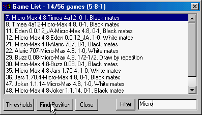
Game list filtered on the word "Micro"
|
Because there is more than one game in the PGN file, WinBoard should now bring up a new window called the 'Game List'.
Here you should see an overview of all games in the PGN file, one line per game.
The line will display some information on the game, derived (mostly) from the PGN tags, by which you might recognize it.
Double-clicking one of the games in the Game List will make WinBoard load that game.
(This would have happened automatically if there was only a single game in the PGN file;
you would have no Game List then.)
This usually means WinBoard will now start stepping through the game automatically,
move by move, to show it to you.
If you wanted to do something else with the game, and are impatient,
you can cut short that automatic display by pushing the >> or << button to go to beginning or end,
or push the 'P' button to pause the automatic stepping.
A permanent way to control this behavior is provided through the 'Load Game...' dialog in the 'Options' menu.
There you can turn this automatic stepping on or off,
and when on, select the stepping rate.
When you turn it off, you will stay at the start of the game after loading.
When you turn it on, but set the 'seconds per move' to 0,
it will step instantaneously to the last position of the game.
(Which might even be more useful, as games are not easily recognized from their starting position...)
|
|
You can customize the lines displayed in the Game List.
For this, there is the 'Game List...' dialog in the 'Options' menu.
In that dialog, you can select the number and order of the displayed tag infos.
Just select one and move it up or down through the list of available tags with the 'Down' and 'Up' button.
Depending on the PGN file you are looking at, tags can be completely useless or make the critical distinction.
If you are looking at the PGN from a single tourney, the Event tags would all be the same,
and just waste space, but the 'round' might be useful.
If it is a collection of games between the same players, the player names would be useless.
In general, player names, result and result details are quite useful.
When you decided on the order, confirming with 'OK' will make this formatting to be used next time you open a Game List.
(So you might have to close and re-open the Game List if you want to change its format, sorry about that.
But there is an item 'Show Game List' in the 'View' menu with which you an do that.
This is also useful when you closed the Game List just because it was in the way.)
If you have a PGN file with hundreds of games, they won't fit the Game-List window all at once, but a scroll will be provide to see them.
It would still be pretty cumbersome to scroll through them all, looking for one particular game, however.
If you know what you are looking for, you can use the 'Filter' field in the Game-List window to facilitate this.
Just type a short text there, and only the lines of the Game List containing that text will be displayed.
You could, for instance, type the name of one of the players in the PGN of a huge tournament.
(Beware that it must be an exact match, including case; if you are not sure about the captitalization,
or if it might be inconsistent, it would be better to omit the first letter of the name!)
Then only the games of that player would be displayed (if player names were selected for display, of course).
|
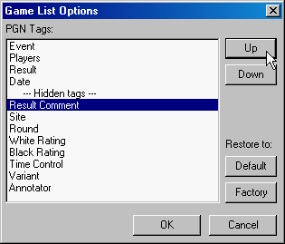
The Options -> Game List... dialog
|
When we were playing against the computer, WinBoard knew which side we were playing,
and automatically presented the board such that the pieces of this color were 'on our side' of the board, i.e. below.
When we are viewing a loaded game, it cannot know which side we identify ourselves with,
and it will always put white below.
When we rather see things from the perspective of black, we can use 'Flip View' in the 'View' menu to flip the board orientation.
(You can also use the keyboard F2 key for this.)
This should work in any mode.
The automatic flipping in the case we play against an engine, btw, can also be switched off,
in the General-Options dialog, 'Auto Flip View'.
PGN COMMENTS AND TAGS
PGN files can contain comments.
When such a comment appears after a move, WinBoard will pop up a 'Comment' window to display it,
as soon as the corresponding position is displayed. (Or, if the window is already open, WinBoard will refresh its contents.)
You can alter such comments, by pushing the 'Edit' button in the Comment window,
and pressing 'OK' when you are done changing.
Note that this does not alter anything in the file from which you might have loaded the game;
only in WinBoard's internal storage of the game.
You would have to save (usually on another file) to preserve the PGN with the altered comment.
If you want to add a comment to a move that did not have one yet,
you can use the 'Edit Comment...' item in the 'Edit' menu to summon up the Comment window.
Similarly, there is a possibility to edit the PGN tags.
For this there is another window, which you can bring up (displaying any existing tags) through the 'Edit Tags...' item in the 'Edit' menu.
VARIATION TREES
PGN games can contain alternative variations, embedded in the moves in parentheses.
WinBoard will initially show such variations as, or together with any other comment on the preceeding move,
i.e. in the Comment window.
When you right-click on a variation in this comment window, WinBoard will load that variation as if it were the current game.
That means you can now step through the variation with the arrow keys, < and >, or the mouse wheel.
When you are done examining the variation, you can return to the original game by clicking 'Revert' in the 'Edit' menu.
(The Home key would do the same.)
This abandons the variation, and restores the original game in WinBoard's internal storage, so you can continue stepping through that.
This process can be applied recursively: variations can contain comments, amongst which sub-variations,
and when stepping through the variaton such sub-variations will again be displayed in the Comment window.
Clicking on them would then load the sub-variation for viewing,
and using 'Revert' would bring you back to the previous variation.
One thing we did not discuss yet is that you can also enter games and variations yourself.
To do this, select 'Edit Game' from the 'Edit' (or 'Mode') menu.
In this mode the engine (if any) will never do any moves (although it might check yours for legality).
You have to play for both sides, but WinBoard will store the moves in the usual way,
creating a game through which you can step with < and >.
For instance, hit 'New Game' in the File menu, followed by 'Edit Game' in the Edit or Mode menu,
andplay the moves e4,e5, Nf3,Nc6,Bc4,Bc5,and try to step back and forth through this mini game.
You can add comments to the moves of this game, and save it on a PGN file, just like any other game.
You can clip moves from the end of a game by clicking 'Truncate Game' (or hitting the 'End' key).
 Reverting after viewing a variation
Reverting after viewing a variation
|
That is simple enough, but you can also make variations.
When you step back through an already entered (or loaded, or played) game in Edit-Game mode,
and enter a new move (by playing it on the board) while keeping the Shift key pressed,
WinBoard will assume you are now entering a variation.
(Without Shift key it would irreversibly discard the tail of the game, and replace it by the entered move.)
This will trigger the same procedure as when you were clicking an already existing variation in the Comment window:
WinBoard will 'shelve' the tail of the line (starting with the move you now altered) it had in storage,
clip it from the game, and add the move you just played.
E.g. move to the position after 2. Nf3 in the mini game you just entered, and play 2... Nf6 while keeping Shift pressed.
This will shelve the main line 2... Nc6 3. Bc4 Bc5, which will be temporarilly inaccessible,
and started a variation, which you can extend by playing Nxe5, Qe7 Nf3 Nxe4, this time without Shift pressed.
As long you are at the game end, (which, for this new variation, you are), the moves will be simply appended.
You can step through the moves of this variation (including the earlier moves of the original game),
and add comments in the usual way.
When you are done with the variation, you could abandon it by clicking 'Revert', but BEWARE!
Doing this would completely destroy the variation you had just been entering.
This would be OK if you just wanted to try something out, and did not like it after all.
But, unlike the case of a variation you loaded from PGN, which was already stored somewhere,
you usually want to save the entered variation.
For this, there exists the 'Annotate' item in the 'Edit' menu.
Using it would abandon the current variation, and revert to the previous line, just like 'Revert'.
But it would now add the abandoned variation as to the original line (in PGN format).
It would show up there as a comment to the move that was first altered,
amongst all comments you added to this variation.
In our example it would add "(2... Nf6 3. Nxe5 Qe7 4. Nf3 Nex4)" amongst the comments to 2... Nc6.
After that it would behave exactly as a variation that occurred in a PGN file you loaded.
On saving the game as PGN, all 'comments', including the variations, would be saved with it.
Again, this process can be applied recursively, so that you can add sub-variations on variations, etc.
|
ANALYZING YOUR GAMES
Analysis is when you have an engine think about a position,
telling you its conclusions, but never making any move by itself.
Not all engines support analysis, in particular Fairy-Max doesn't,
so for the following, make sure you started up WinBoard with another engine (e.g. Fruit, Stockfish, Elephant Eye).
After starting, select 'Analysis Mode' in the 'Mode' menu.
If the Engine-Output window was not open before, it now should pop up,
and start to show you the engine score and PV for the current position, at ever increasing search depth.
The longer you let it think about it, the deeper it will search the current position, and the more accurate (hopefully) its analysis.
You can now play a move, creating a new position, and the engine will then automatically switch to analyzing that position.
This way you can try out moves, and see what the engine thinks about them.
Except the fact that the engine now is reporting on the position, entering the moves has exactly the same effect as in Edit-Game mode:
WinBoard will add them to the 'current game', in its internal storage.
Using the < button now to step back through this game,
but it will now also take the attention of the engine with it:
the engine will always be analyzing the position currently in the display.
It is not very interesting to analyze the opening position, of course. (Mankind has been doing that for centuries...)
Normally you would load a game that has already been played, using 'Load Game' in the 'File' menu,
and step through it to some critical position before switching on analysis.
You can then try out some alternative moves to the one that was actually played, and get the engine's opinion about it.
When you do this while keeping the Shift key pressed, the entered move will not damage the original game,
but it will remain accessible through 'Revert'.
(See the section 'Variation Trees' above.)
In fact, immediately after loading a game, WinBoard will not even allow you to play moves without pressing the Shift key,
to protect the original main line.
Only after you switch to 'Edit Game' mode, you can enter plain moves, which then replace the game tail irreversibly.
The PV the engine gives in any position tells you which move it thinks best.
If that is not the move that was actually played in the game,
you can follow up the engine's move by right-clicking on the PV in the Engine-Output window
(again, keeping Shift pressed if you don't want to alter the original game).
This performs the first move of that PV like you entered it yourself.
In fact you can select a larger number of moves from the PV to be played,
by moving the mouse between the press and release of the right mouse button, when clicking on it.
The mouse motion will step you through the PV, and the position shown when you release will become current,
and the new point of analysis.
If you stepped back to the very beginning of the PV by moving the mouse pointer down,
no moves will be added at all, so you can use this for just browsing through the PV without any consequences for the stored game.
Sometimes you would also be interested to have the engine suggest alternatives,
rather than coming up with those yourself, and trying them out.
For this, some engines have a so-called 'multi-PV' mode.
With Fruit or Stockfish you can open the 'Engine #1 Settings...' dialog in the 'Engine' menu,
to see an entire truck-load of possible engine settings (unique to that engine) you could change.
Best stay away from them, because the default values are usually well optimized,
and changing anything is likely to make the engine play weaker.
The setting we are after is 'multi-PV', which would normally be 1.
When you change it to 4, (and confirm with 'OK'),
restarting the analysis should now give you (at least) four different moves (and lines of subsequent expected play)
at every search depth.
These are the four moves the engine thinks are best in this position,
and from the scores you can see if the engine thinks they are close to the best move,
or if there are blunders amongst them.
|
A more convenient way to change the number of displayed PVs is offered in the Engine Output window itself:
for engines that support multi-PV, a header line will appear at the top of the pane for that engine,
containing the words 'fewer' and 'more'.
When you right-click on those words, the number of PVs will be decreased or increased by one, respectively.
Beware that multi-PV mode is not free:
you ask the engine to spend time on several moves, meaning it can spend less time on the best move.
So when you have the engine play a game, you better make sure that the multi-PV setting is back to 1,
because in a game the second-best move is not interesting at all: it will not be played!
|
 Engine-Output window, with multi-PV header
Engine-Output window, with multi-PV header
|
Another neat trick is that you can play 'null moves', i.e. pass your turn to see what the opponent could do if you stay passive.
You do this by clicking on the clock of the side you want to give the move to.
Again, you can do this with the Shift key pressed to start a variation with that null move.
Like with all moves, to undo it, step back with the arrow keys, and don't play a second null move!
You can analyse all positions of a game automatically:
For this you can use the 'Analyze Game' item in the 'Mode' menu.
First make sure the game you want to analyze is loaded
WinBoard will then start automatic stepping through the game,
(starting at the currently displayed position of it),
while the engine will be analyzing it,
and add its conclusions (score, depth and PV) as comments to the moves.
The stepping rate can be set in the Load Game dialog of the Options menu.
CHESS VARIANTS
In the 'File' menu, the 'New Variant...' dialog will allow you to select another variant than normal Chess.
The (first) engine loaded in WinBoard must be able to play the variant, however,
or selecting the variant will lead to an error message.
Most engines play only a single variant, but some play many (e.g. Fairy-Max, Pulsar, Sjeng).
Playing a variant works just like playing a normal game.
Note that many variants contain un-orthodox pieces, and that WinBoard only has built-in bitmaps for those in board sizes
bulky, middling and petite.
In other sizes they might show up as empty squares!
In board size moderate there are traditional oriental pieces for Shogi.
Some variants (e.g. Crazyhouse) have holdings displayed next to the board, from which you can drag pieces to the board for drop moves.
Other variants display such holdings only for selecting a promotion piece from them.
For Chess960, you have to enter castling by dragging the King on top of the Rook it wants to castle with,
and in Seirawan Chess you can drag Rook on top of King to gate at the Rook square.
(Gating moves are entered by selecting the piece in the holdings you want to gate before making the move.)
Some variants, like Chess960 (FRC), are shuffle variants without a fixed opening position.
To control how WinBoard selects opening positions for such variants, there is the 'New Shuffle Game...' dialog in the 'File' menu.
There you can select a fixed opening position, by typing the number of the opening.
A 'Random' button is provided to select this fixed opening position at random.
When you enter -1 as number, (which is invalid as opening number), it will make WinBoard select a new random position for every game.
You can use the 'New Shuffle Game...' dialog on every variant,
even those that naturally do not shuffle.
After confirming with 'OK', the use of this dialog will result in all subsequent games in the current variant
having their opening setups shuffled.
The rules for shuffling differ according to the rules for castling;
in variants with standard castling the King and Rooks are left alone,
in variants without castling all pieces are shuffled without restriction.
(Except that color-bound pieces like Bishops will be placed in pairs on oppositely colored squares.)
In variants with Fischer castling (FRC, CRC), Rooks and King are shuffled, but such that King remains between Rooks.
The shuffling will stay in force until you 'OK' the 'New Variant...' dialog.
THE STARTUP DIALOG
So far we have been starting WinBoard from the Windows start menu with 'pre-cooked' settings,
that had a specific engine already loaded.
That is of course very easy if playing that engine is really what you wanted to do.
A more general way to start WinBoard is through the 'Startup Dialog'.
There is also an entry in the Windows start menu to start up WinBoard that way.
In this case, the Chess board will not pop up immediately,
but in stead you wll get a dialog that lets you specify what exactly you want to use WinBoard for.
|
Try it, and you will see you now have the choice between three major options.
One of those is to use WinBoard as an interface to play Chess with other people over the internet.
About this alone we could write an entire manual, not because WinBoard is so hard to operate in this mode,
but because you would have to operate the Internet Chess Server (ICS) by typing commands to it
in the terminal window that WinBoard will open for you.
We won't go into all that in this tutorial.
Here it suffices to say that (if your computer has a normal internet connection)
ticking this mode allows you to select an ICS from a pre-defined list (or type the name of one not in the list),
and when you 'OK' it, WinBoard will make the connection, and present you the logon screen of the ICS.
And from that moment on, you are on your own!
The options dealt with in this tutorial are the other two:
playing against engines, or game-viewer mode.
The latter is the simplest; you really don't have to provide any other information, and can directly click 'OK' to get the Chess board.
But, like the name of this mode suggests, there is also not very much you can do in this mode, except viewing games.
There will be no engine loaded, and all menu commands associated with engines (such as 'Machine White' or 'Analysis') are greyed out.
An advantage can be that you are also not bothered by any limitation the engine might impose.
For instance, you can now select 'Crazyhouse' from the 'New Variant...' dialog,
without running into the complaint that the engine does not support it.
The only thing you can do is load files with games or positions,
step through them in 'Edit Game' mode, perhaps add comments or variations before you save them again.
When you associated the PGN file extension with WinBoard during the install,
clicking on a PGN file will automatically start up WinBoard in this mode, with the clicked file loaded.
|
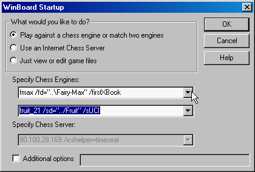
The Startup Dialog
|
The other mode is for using engines on your local machine.
In this case, you will have to provide the name of a first, and possibly a second engine.
The latter you only need if you want to play engines against each other (through the 'Two Machines' menu command).
The first engine is mandatory, though, even if you will only use 'Edit Game' mode or view PGN files:
it will be with you on every step, used to check the legality of the moves.
Note that WinBoard also does this by itself (for normal Chess!),
but it could be switched off (in the General Options dialog, 'Test Legality') for the benefit
of variants that WinBoard does not (perfectly) know the rules of.
In that case the engine is used as the final authority on what is legal, what is checkmate, etc.
So you need to specify a first engine.
WinBoard can help with this, because the combobox for it already contains a number of engine specifications,
of the engines that came with it in the install.
If you are happy with any of those, you can simply select it, and press 'OK'.
The more interesting case is when you want to provide your own engine.
It could be that you downloaded another free engine, such as Crafty,
or own a commercial engine, such as Rybka, and now want to run it through WinBoard.
You could do that by typing the info on the engine in the comboboxes of the startup dialog, but that is rather cumbersome.
It would be easier to just start WinBoard with whatever engine happens to be in the combobox, by clicking 'OK',
and then change engine later from the menu.
INSTALLING OTHER ENGINES
|
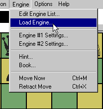
|
The Engine -> Load Engine menu item allows you to change engine any time you want.
You can even do that during a game, or when analyzing a position.
The dialog to change engine can be used in two ways.
For one, it contains a combobox similar to those in the startup dialog, where you can select one of the pre-installed engines.
In this case the engines are listed in the combobox through a simplified 'nickname',
rather than the full engine command being displayed together with all its options.
When selecting from this combobox, the only other thing you have to take care of is use the combobox at the bottom,
to tell WinBoard if you want to install the selected engine as first or as second engine, and click 'OK'.
The more interesting case is when you want to use an engine that was not yet in the combobox list.
In that case you have to specify to WinBoard where the engine executable is located.
You can do this by using the browse button next to the 'Engine (*.exe)' field.
Just browse to the .exe file of the engine, and click it.
This wil put the full path name of the engine in the text-edit.
Only when engines expect their files in another folder as where their executable is,
you would need to inform WinBoard of that in the 'directory' field; otherwise (= usually) you can leave that empty.
Sometimes engines need parameters in their startup command, but usually that can stay empty as well.
WinBoard will derive a ninckname for display in the combobox from the name of the engine .exe file,
but if the latter is cumbersome or non-descriptive, you can supply one yourself in the 'nickname' field.
|
|
After having specified the engine, you have to give some info about it.
The most imortant thing is the 'UCI' checkbox, that will have to be ticked for engines that use UCI protocol.
When you set this wrong, the engine won't work.
You can also specify if the engine should use the GUI book, and if you want the nickname to be used for the engine
in PGN name tags of engine-engine games, rather than the name the engine reports itself.
A checkbox that is of utmost interest is the 'Add to list'.
When this is ticked, (the default situation), the engine you specified will be added to the list to appear in the combobox,
so that next time you can select it from there the easy way.
There are lots of other WinBoard setting that you could specify together with an engine,
so that they will be automatically applied when that engine is loaded.
The Load Engine dialog, for example, has a checkbox where you can ask WinBoard to automatically
change to a certain variant when an engine is loaded.
This is useful for engines that play only a single variant that is not standard Chess.
But to add other options, you will have to edit the list of engines for presenting in the combobox,
This list is in the file winboard.ini, which holds the WinBoard settings,
and you could have edited that file with a general text editor like MS NotePad.
But the 'Edit Engine List' item in the 'Engine' menu provide an easier way to do this.
You could even add complete new engines this way, by adding a new line to this list,
but it is easier to se the 'Afd to list' feature of the Load Engine dialog for this.
A similar command exists for changing the list of Internet Chess Servers ('Add ICS' in the 'Options' menu).
|
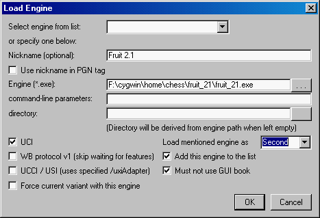
|
|
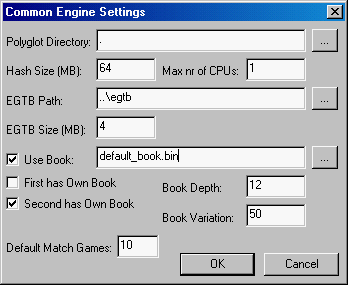
Options -> Common Engine... dialog
|
To configure the engine, you can use the 'Engine #N Settings' dialog in the 'Engine' menu, which we already encountered above.
For UCI engines, you can save the engine settings with a save button in this dialog.
Then, next time you use that same engine, it will remember the settings.
Some parameters that are common to most engines can be controlled centrally,
from the 'Common Engine...' dialog in the 'Options' menu.
These includes the 'Hash Size' (the amount of memory the engine is allowed to use;
be careful to not set it to more memory than you have, especially if you are running two engines),
and the number of CPUs an engine is allowed to use.
(Again, don't set it to more than you have; if you run two engines with ponder on,
one will think in the time of the other, so you can give at most half your number of cores to each.)
You can also specify an opening book here, that WinBoard will use for engines that do not have a book themself.
Normally WinBoard assumes an engine has its own book,
but when you accompany the engine line in the startup combobox by /firstXBook (or /secondXBook for the second engine),
which was accomplished by ticking the corresponding checkbox in the Load Engine dialog,
the "has Own Book" checkbox for that engine will start unticked.
The WinBoard standard install comes with a small book, but any book in Polyglot format can be used.
and there are several great books available in this format for free download.
The move selection from the book can be further controlled by a depth limit,
and avariabe to tune the randomness (100 = purely random, 0 = always play best move).
For engines that use end-game tables, you can tell them where you have these installed on your computer,
UCI engines furthermore need to be told how much memory they must use to cache the end-game data.
|
RUNNING A TOURNAMENT
|
WinBoard has a built-in tournament manager, for engine tournaments.
To start a new tournament, you use the Tournament item in the Options menu.
This pops up a dialog where you can complete all info to fully specify the tournament.
Mandatory are the list of participating engines, and the name of a new tournament file
(which you will have to make up for the purpose; say we use 'MyTourney.trn').
The participants can be selected from WinBoard's list of installed engines through a combobox
similar to that in the Load Engine dialog.
You can also set the 'number of games per pairing',
which is the number of games to be played in a row (with alternating colors) between the same two participants,
before involving other participants.
An alternative way to have participants play more than one game against each other is the 'number of cycles';
if this is larger than one, the entire schedule of the tourney will be repeated after all participants have met each other.
Basically this is all you need; the number of cycles will be suggested as one,
and the number of games per pairing as your usual default (which also can be set in the Common Engine dialog).
Just entering participants and a tourney file is enough to start a round-robin tourney when you click 'OK'.
WinBoard can also do other kind of tournaments
When you specify a non-zero value for 'tournament type', say N, WinBoard will not play every engine against all others,
but will only play the first N participants yo entered against each remaining participant.
For N=1, this is called a gauntlet; for larger N a multi-gauntlet.
This type of tourney is useful for testing a specific engine, or comparing two versions of the same engine,
by playing it/them against a large nmber of opponents.
You might wonder what the significance of the tournament file was.
This is a file that WinBoard uses to keep track of the tourney progress,
which games have been played, and other info, such as participants, time control, number of games, file to save them on.
Because of this file, WinBoard will be able to resume a tourney that was interrupted.
(The recommended way to interrupt a tourney is to click the Mode -> Machine Match menu item;
this will finish the current game before dropping out of match mode, after which you can quit without losing the game in progress.
Quitting straight away will also work, but the game in progress will be replayed from scratch on resuming in that case.)
It makes resuming trivial: just give the (existing) tournament file in the Options -> Tournament dialog, and click OK.
Because the file already exists, WinBoard will not look at any other item of the Tournament dialog;
it reads them all from the file, including the info which games have already been played,
so it can immediately continue with the next game.
When you chose to associate the .TRN file extension with WinBoard tourney files while installing WinBoard,
you can even do this by simply clicking an existing tournament file of an unfinished tournament.
Windows will then automatically start up WinBoard, which will automatically resume that tourney.
|
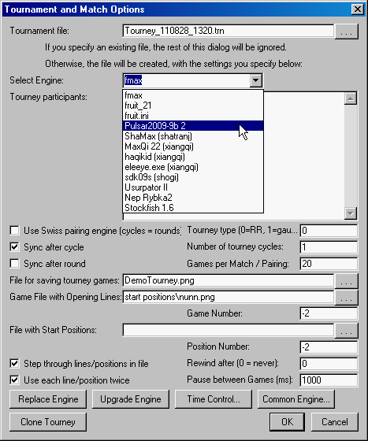
|
It does not even matter if the tournament was actually interrupted.
You can also 'resume' a tourney that is still being played!
In this case a new instance of WinBoard will start working together with the one that was already playing the tournament, to finish it.
They will neatly divide up the games between them.
The checkboxes 'sync after round' and 'sync after cycle' are included in the Tournament Options dialog to control this situation,
to include points in the tourney that cannot be passed before all preceding games (of the round or cycle) have been finished.
If needed, cooperating WinBoard instances will wait for others to finish, and then all start the new round or cycle at the same time.
(In a (multi-)gauntlet a round is defined as all gauntlet engines having played a single game,
so better switch off 'sync after round' if you play with only a single gauntlet engine!)
Of course you can also have several WinBoard instances work on different tournaments simultaneously;
it just depends on which tournament files you specify (or click).
Because each tourney has its own file, there is no need to wait for a tourney to finish, before you can start a new one.
You can even change participants during the tourney!
Just summon up the Tournament dialog in a WinBoard that is playing the tourney.
It will show you the current list of participants.
Just change one of those participants for the name of another installed engine, by editing that list,
and press one of the buttons at the bottom of the dialog.
'Replace Engine' will replay all games the replaced engine already had to its name,
while 'Upgrade Engine' will retain those games, and uses the new engine for future games only.
If you have a tourney that you often repeat, like a test gauntlet with very many opponents for the engine you develop,
the 'Clone Tourney' button can save you a lot of time picking opponents.
To use it, first select the tourney file of a previous edition, using the browse button, and then click 'Clone Tourney'.
This will fill all fields of the Tournament dialogs with those read from the tourney you clone
(and also set the corresponding time control options, in fact every option the cloned file contained).
And it will restore the tourney-file name to the one originally suggested,
so that when you now click 'OK', you will start a new tourney with exactly the same settings as the cloned one.
Of course you can alter some of the settings before hitting 'OK'.
SEARCHING POSITIONS IN A PGN COLLECTION
|
You can also use WinBoard to search for a position in a file with many PGN games in it (a PGN 'database').
This is very easy: when you open such a file through the File -> Load Game menu,
the Game List window that will pop up to list the contents if the file will have a button 'Find Position' at the bottom.
When you click this, all games will be scanned for the occurrence of the position that is displayed on the board,
and only those containing it will be left in the Game List.
Even with a pretty small PGN file, the position after 1. d4
(which you realized on the board by simply playing d4 after having loaded the game file)
will usually occur in quite a few games.
After you pressed 'Find Position', every game you now select from the GameList
will load with the sought position in the display, rather than the opening or final position, or auto-playing.
|
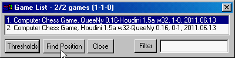
|
|
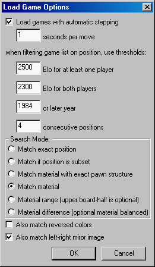
|
You can look for exactly the same position as you have on the board,
but you can also search with several degrees of 'fuzziness':
find positions that contain a sub-structure you put on the board
(e.g. a certain King fortress),
but can have unspecified material on the empty squares.
You can also look for positions that have the same material as what you have on the board.
You can even do this within a range.
E.g. set up a position with a King, Rook and Pawn of both black and white on the lower half of the board (ranks 1-4),
and two white and two black Pawns on the upper half (ranks 5-8).
With the 'Thresholds' button at the bottom of the Game List you then select 'Material Range' as 'Search Mode',
and press 'Find Position'.
Only games with a Rook ending with 1-3 Pawns on each side will now be left in the Game List, e.g.KRPPKR or KRPKRPPP.
If you want to search for a certain difference, e.g. Rook endings where black had 1-3 Pawns,
and white had one more Pawn than black,
you can add the white Pawn to the KRKR on the bottom half of the board,
and put 3 Pawns of each color in the upper half.
In the 'Thresholds' dialog you can then select 'Material Difference'.
This forces the optional material in the upper board half to be balanced.
So you would find KRPKR (the required material in the lower board half),
but also KRPPKRP, KRPPPKRPP and KRPPPPKRPPP.
But not KRPKRPP, which you would have found with the same board setup
when you had ticked 'Material Range'.
An even wider acceptance can be selected by ticking 'also match reversed colors'.
With the board setup as above, you would then also find the Rook endings where black had the extra Pawn.
When looking for an exact position match, this option looks for positions that have all pieces switched to the opposite color,
and is then flipped vertically (with the opposite side to move).
So if you set up 1.c3 e6 2. Nf3 e5 3. Ng1 (black to move) and search for an exact position match,
you would not find any game (because no one plays that),
but if you also search forcolor reversed you would find all Caro-Kann openings (1. e4 c5 (white to move)).
In a similar way you can also search for horizontally flipped positions,
which makes no sense in Chess as long as there still are castling rights,
but is very important in Chinese Chess (which has no castling, and 'Queens' on both sides of the King).
|
The dialog summoned by pressing 'Thresholds' also allows you to specify a minimum rating
for the strongest and weakest player, and a date (year only) before which everything will be ignored.
This can be useful in very large collections of games, when you search for a position from a popular opening,
to restrict the number of found games to a manageable value, by only selecting recent games of the strongest players.
Note that the dialog to specify this is in fact the Load Game dialog,
which can also be summoned from the Options menu.
You can thus already set thresholds before you even open a game file,
to reduce the initial size of the Game List.
(Lists of over 10,000 games take appreciable time to prepare!)
Finally, try to look for KQPKRP by 'exact material'.
When you load some of the games that are selected this way,
you will notice that they are not Q vs R endings at all,
but that the Queen usually just promoted, and the next two moves will be RxQ, KxQ, to leave a KPKP.
To avoid matching on such 'transient' material compositions,
you can select a minimum number of half-moves the requested material composition must be stable.
(This setting is ignored when you search for position matches rather than material.)